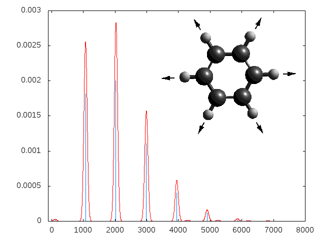

Table of contents |
|
Important linksExplanation of models Printing options for the log-files Options and structure of input files Documentation of Vispers output |
VispeR is an acronym for Vibronic spectrum Rostock.
When dealing with molecular spectra such as photo absorption/emission in the UV or visible range, photo electron spectra or similar, people usually consider the electronic transitions for it only. Doing so, the structure of the spectra is underestimated because of the neglect of the vibrational contributions. Visper is supposed to correct for this problem by estimating the vibrational structure.
Among a large number of shifted and shifted/rotated harmonic oscillator models describing the vibrational motion, Visper implements some of the main. With this, it allows to study the influence of various effects independently.
The required data (such as electronic energies, Hessians and molecular geometry) are read from log-files of quantum-chemistry programs such as Gaussian or NWChem.
|
Visper is a python-script for calculating vibronic spectra to get insight into molecular processes via calculations on different levels of theory It is meant to compute vibronic spectra for transitions between a pair of electronic states using informations given by quantum-chemical calculations on these states. It supports Gaussian and NWChem at the moment. Support for other program packages as well as further algorithms e.g. for the description of non-adiabatic transitions are easy to add due to the class-based structure of the code, making access to different values easier. |
 |
Visper is written in python2 and needs the non-standard packages numpy and scipy to be installed.
The requirements on hardware strongly depend on the problems to be solved. The basic calculations are possible with some Mbytes of RAM.
There is also an option to use a Cpp-extension that can speed up the most demanding part of the Visper.
Visper is invoked with an input-file as only argument that contains all options as well as the names of two log-files of quantum-chemical programs such as Gaussian or NWChem.